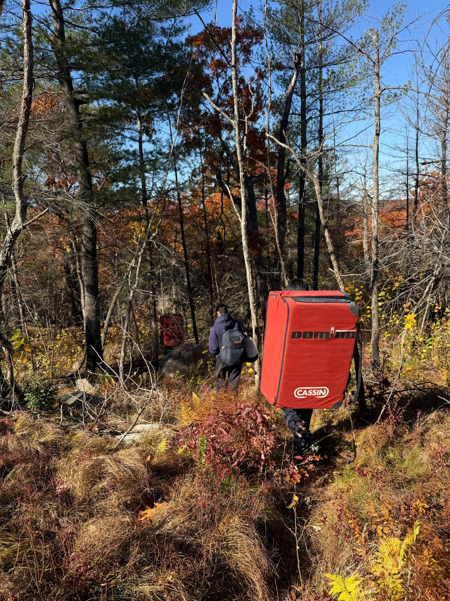
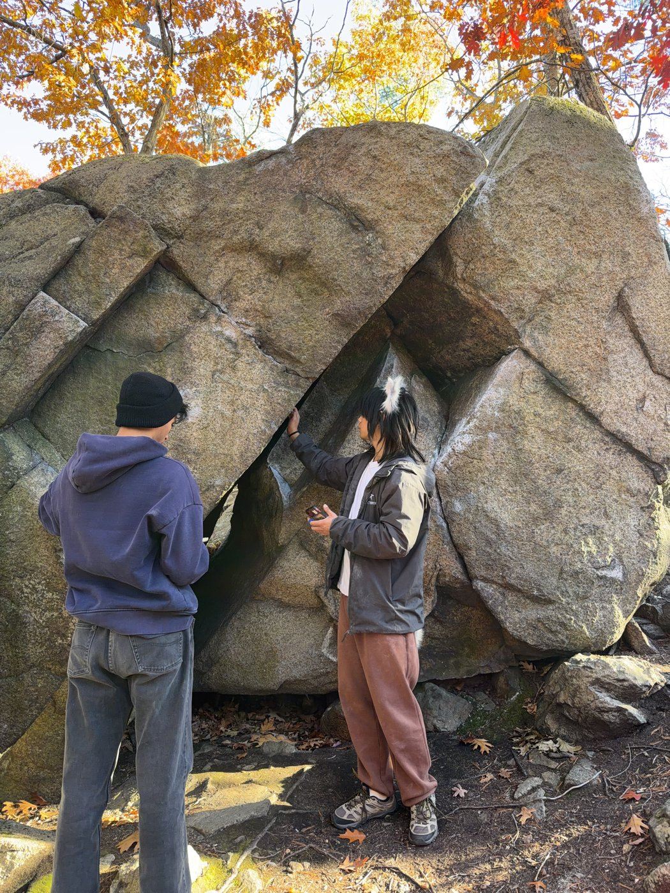
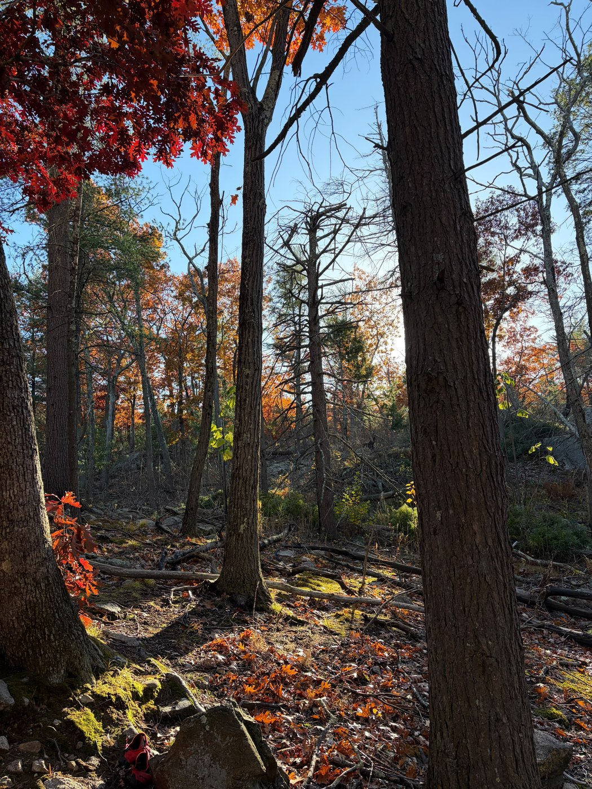
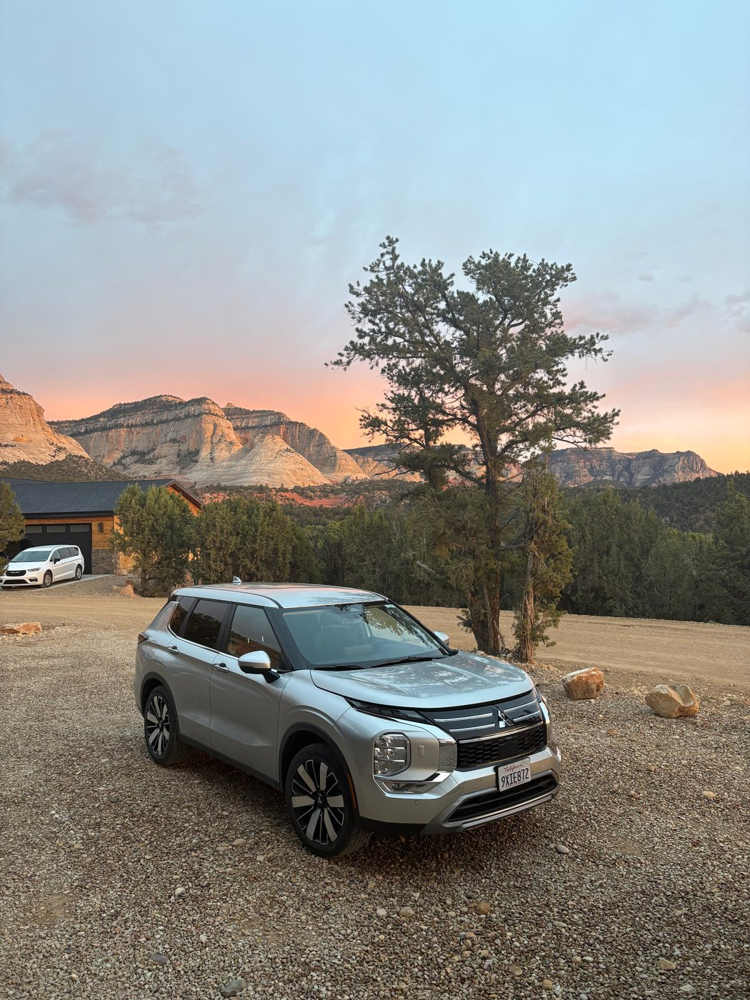
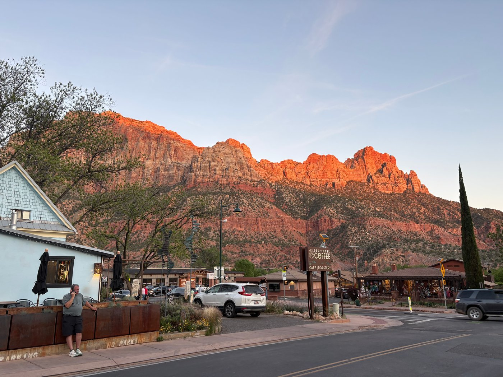
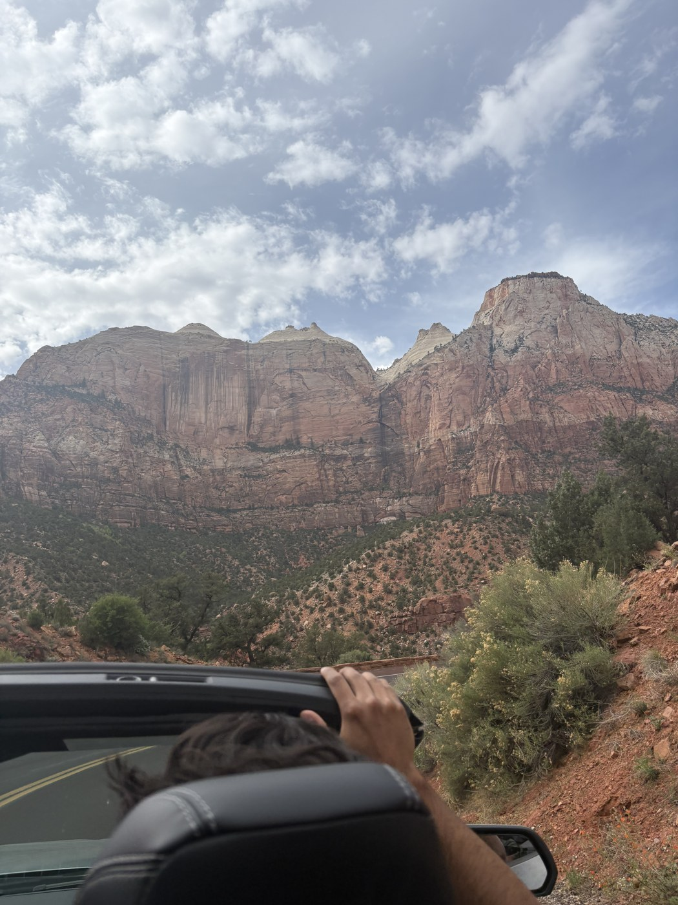
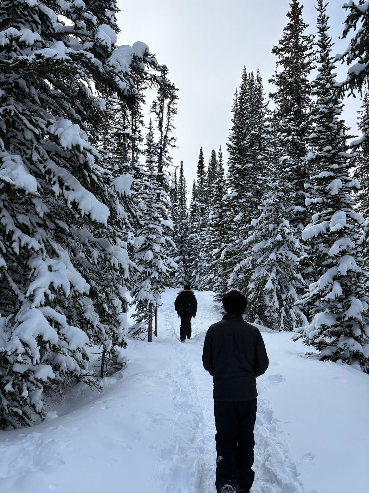
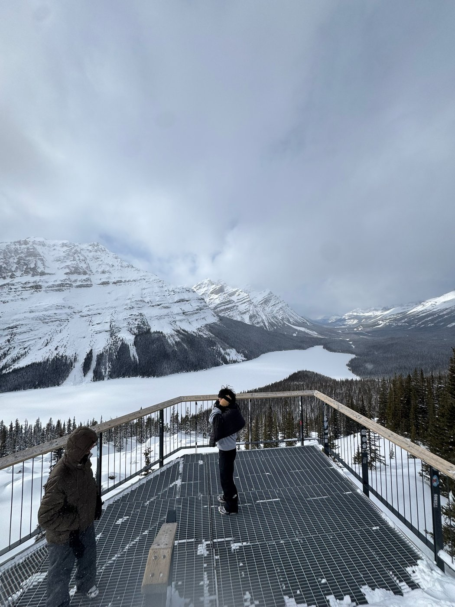
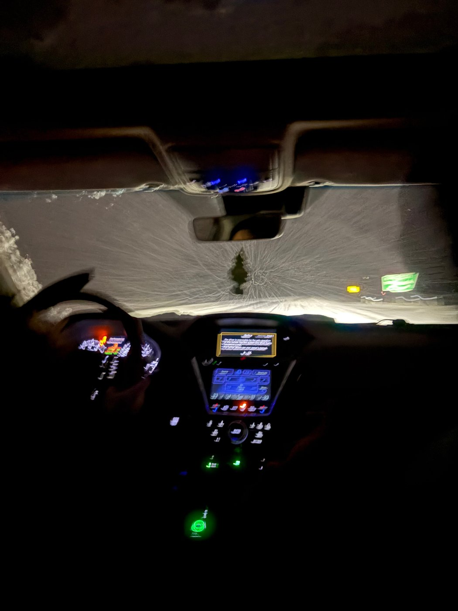

First time outdoor bouldering in mass (and after many years generally). Definitely a humbling experience but excited to go more often again. Went with a fellow sensible linguist.
Whilst deeply fulfilling, research can be quite draining and thus I try to find ways to maintain balance in life. Below are some examples of this balance.








